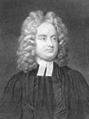

(1667 – 1745)

Yüzyıllardır "çocuk kitabı" diye okunsa da "Gulliver'in Gezileri" aslında yazar Jonathan Swift'in içinde yaşadığı topluma duyduğu tepkilerden ortaya çıkmış bir yergi başyapıtıdır. Minik insanların, devlerin, uçan adaların, konuşan atların ülkelerinde gezinen Lemuel Gulliver bize aslında insan doğasının kötü yanlarını, bencilliğini ve düşüncesizliğini sergileyen ve her zaman bakmamız gereken bir aynadır.
İngiliz edebiyatının büyük hiciv ustası Swift, 30 Kasım 1667'de İrlanda'nın başkenti Dublin'de doğdu. Babası o doğmadan öldüğü ve annesi de onu bırakıp Londra'ya döndüğü için Swift'in hayatı amcası ve hâmisi olan Godwin Swift'in yanında geçti. Onu kendi çocuklarından ayırmayan amcası Swift'i kuzeniyle birlikte okula gönderdi ve yazar 1686'da Trinity College'ı bitirdi ve İngiltere'ye gitti. Siyasetçi ve yazar Sir William Temple'ın sekreteri oldu. İlk şiirleri ve Stella'yla olan arkadaşlığı da bu tarihlere rastlar (1691).
Jonathan Swift'in yaşamında William Temple'ın etkisi önemliydi. O yılların kültürel ortamıyla ve etkili kişileriyle tanışıklığı onun sayesinde oldu, Oxford Üniversitesi'nde lisansüstü eğitimi yapmasını da yine Temple teşvik etti. O yıllarda yazmaya başlayan Swift aslında daha çok düzyazı yazarı olarak bilinse de özellikle liberal siyaseti savunan metinleri ve eleştirileriyle büyük ilgi topladı.
Temple'ın ölümünden sonra Dublin'e giden ve Lord Berkeley'nin yanında çalışan Swift, 1701'de Londra'ya döndüğünde artık tanınan bir yazardı. Siyaset, din ve edebiyat alanlarında girdiği polemiklerde etkiliydi. 1702 yılında Trinity College'dan teoloji doktorasını alan Swift o yıllarda politik hayatta da gittikçe etkin rol almaya başladı ve İrlanda'nın geleceğini ilgilendiren konularda yazılar yazdı. Özellikle 1729'da yayımlanan ve bugün de yergi edebiyatının başyapıtlarından biri kabul edilen Alçakgönüllü Bir Teklif yazısı, onun İrlanda milliyetçisi kimliğini net olarak vurgulamaktadır. Aynı yıllarda Swift, Önceleri Bir Cerrah, Sonraları Çeşitli Gemilerin Kaptanı Olan Lemuel Gulliver'in Dünyanın Çeşitli Uzak Uluslarına Yolculuklarının Dört Kısım Halinde Anlatılışı adını taşıyan, tüm dünyanınsa Gulliver'in Gezileri adıyla tanıdığı başyapıtını kaleme almaktaydı. 1726 yılında yayımlanan kitap anında müthiş bir ilgiyle karşılandı ve baskı üzerine baskı yapmaya başladı. Ertesi yılsa Gulliver'in Gezileri'nin Fransızca, Almanca ve Flamanca çevirileri çıkmıştı bile!
Art arda yayımlanan kitapları da oldukça ilgi görmüş; parlak zekası hayranlık uyandırmıştı. Siyasi olarak liberallerin yanında yer alan Swift, aynı zamanda kiliseye ve dine de bağlıydı. Belki de muhafazakar partinin iktidar olmasının etkisiyle 1710'dan sonra muhafazakar Tory Partisi'ni desteklemeye ve bu partinin ileri gelenlerinin yer aldığı The Examiner dergisinde çalışmaya başladı. Ancak 1714'te Tory'lerin siyasi gücü azaldı ve Swift hayal kırıklığı ile Dublin'e geri döndü. Bu tarihten ölümüne kadar geçen sürede Swift, kendini İrlanda'nın sorunları üzerinde çalışmaya ve yazmaya verdi.
1738 yılında hastalığı ağırlaşan yazar, 1742 yılında ciddi bir felç geçirerek konuşma yetisini kaybetti. Aynı yıl geçirdiği bir hastalıktan sol gözü yumruk kadar şişen Swift'in kendi gözünü çıkarmasına çevresindekiler zor engel oldu ve yazarın delirmeye başladığı söylenerek cezai ehliyeti olmadığı açıklandı.
Jonathan Swift 19 Ekim 1745'te Dublin'de öldü ve geride bıraktığı büyük mirasla (1757 yılında) bugün hâlâ kullanılan bir sinir hastalıkları hastanesi kuruldu.
Seçme Yapıtları: Güliver'in Gezileri (Türkiye İş Bankası Yayınları, 2007)